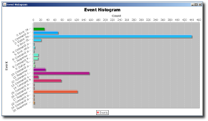

Log Mining Toolkit
Contact Information
Tao Li, Advisor
School of Computing and Information
Sciences, Florida International University
11200 SW 8th Street, Miami, 33199,
USA
Email: taoli at cs.fiu.edu, URL:
http://www.cs.fiu.edu/~taoli
Liang Tang, PhD student
School of Computing and
Information Sciences, Florida International University
11200 SW 8th Street,
Miami, 33199, USA
Email: ltang002 at cs.fiu.edu, URL:
http://www.cs.fiu.edu/~ltang002
Introduction
Log Mining Toolkit is a solution for analyzing and mining massive texual log information. It first collects the log informtion from the system, and then uses data mining techniques to analyze the system log information. The toolkit can help people understand what happened inside a complex system and also facilitate the root-case analysis of malfunctions.
Our Log Mining Toolkit integrates serval related subprojects. The first subproject is the LogTree, which is introduced in the following section.
LogTree: A framework of generating system events from raw textual logs
Our first work is to convert the raw textual log messages into system events. Many raw log messages are generated by various components of a complex system, customizing a special log converter for one system is a time-consuming task. Furthermore, the incompleteness and inconsistency of documentation cause customizing log converters to become really difficult, if not impossible. In our solution, we use data clustering approach to divide the log messages into different groups using both the message terms and message format information. Each group represents one type of system events.
We developed a simple and basic demo by Java 1.5, which is a console application.
Screenshots:
| The main window of the LogTree console appplication | |
| The created event timeline | |
|  | The created event histogram |
Publications:
Demo:
logtree.jar ( This demo
is not fully implemented, just for show the use cases. If you have any question, please
email me).
This demo only contains four parsers for fileZilla log, mysql
error log, apache error log and pvfs2 log. There are 4 testing log files for
each of them: filezilla_1K.log,
mysqlerr.txt,
apache_error_1K.log,
pvfs2_1K.log. Note when
you open this log file in the demo, please specify what type of log file.
Source Code:
logtree_alpha0.1_src.zip. This zip package includes two directories: lib and src. All the implementation source code is inside "src" directory. "lib" directory contains the neccessary libraries for this source code. In this demo, we use JUNG and JFreeChart to visualize the generated events.
{kind=link}
{kind=link}
{kind=link}